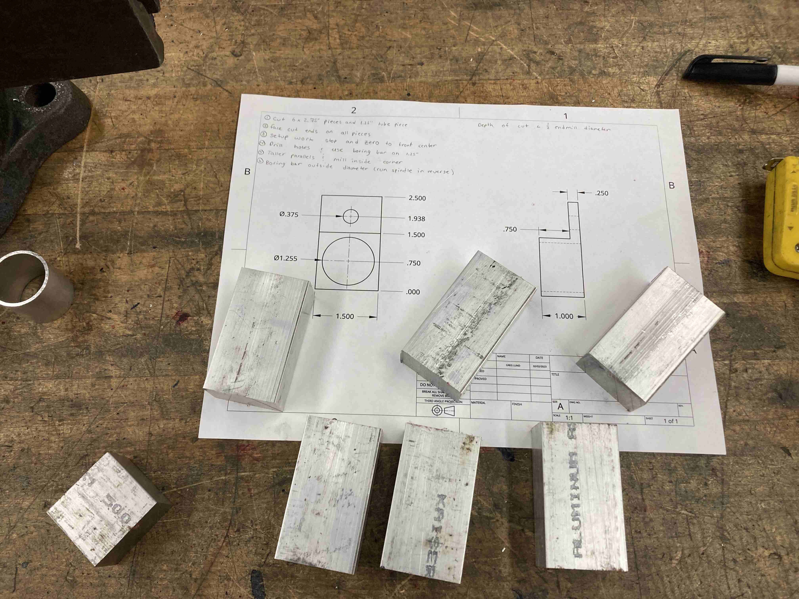
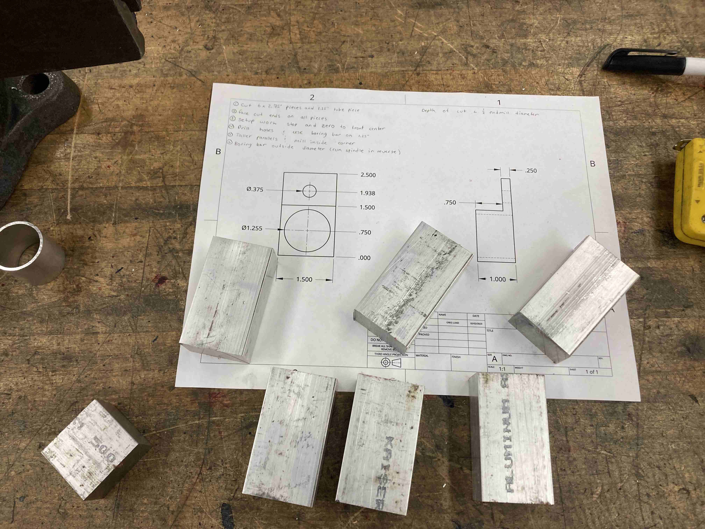
 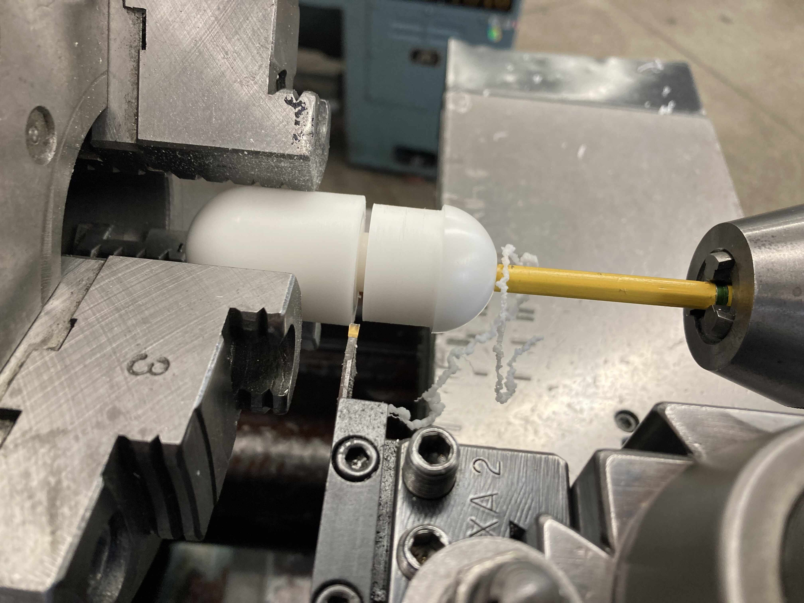
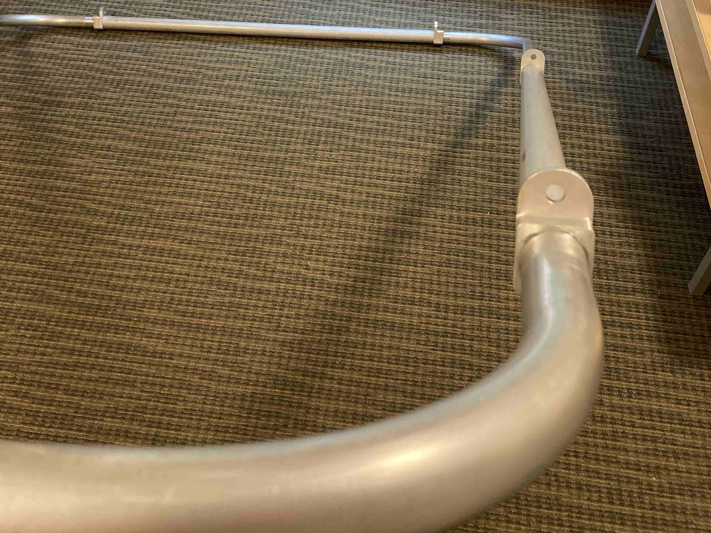
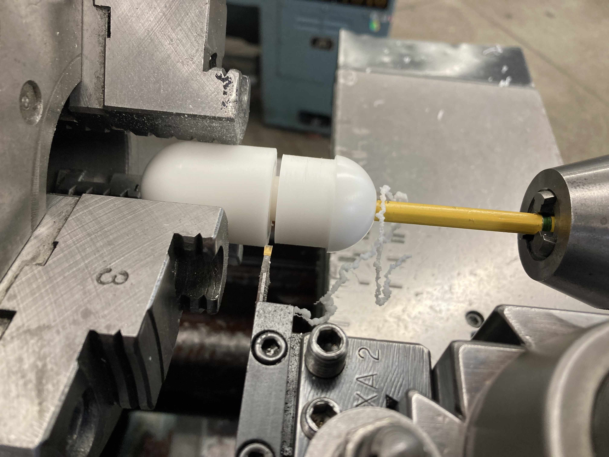
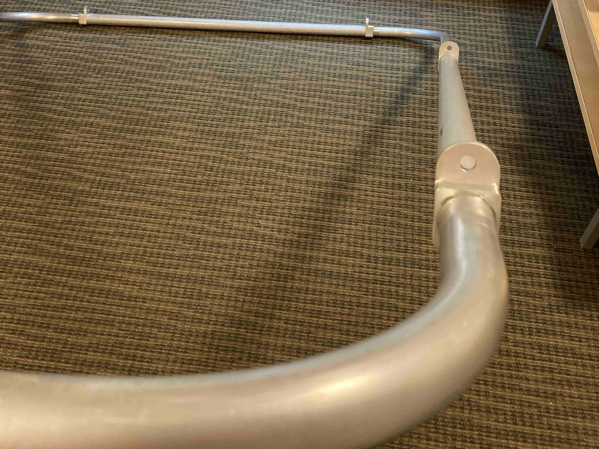
 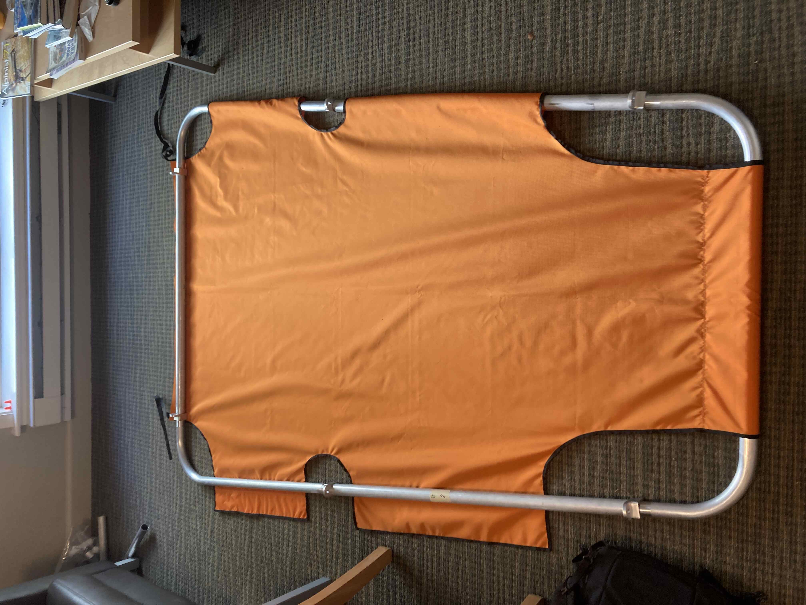
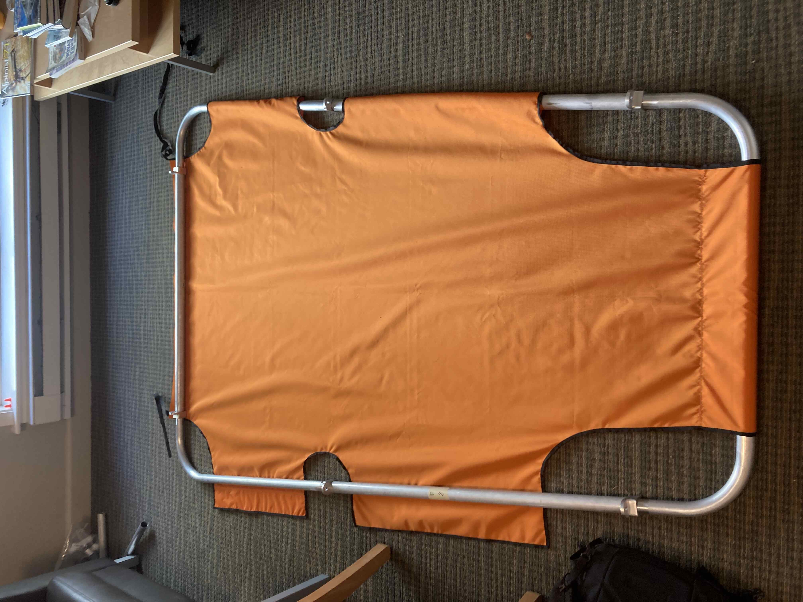

 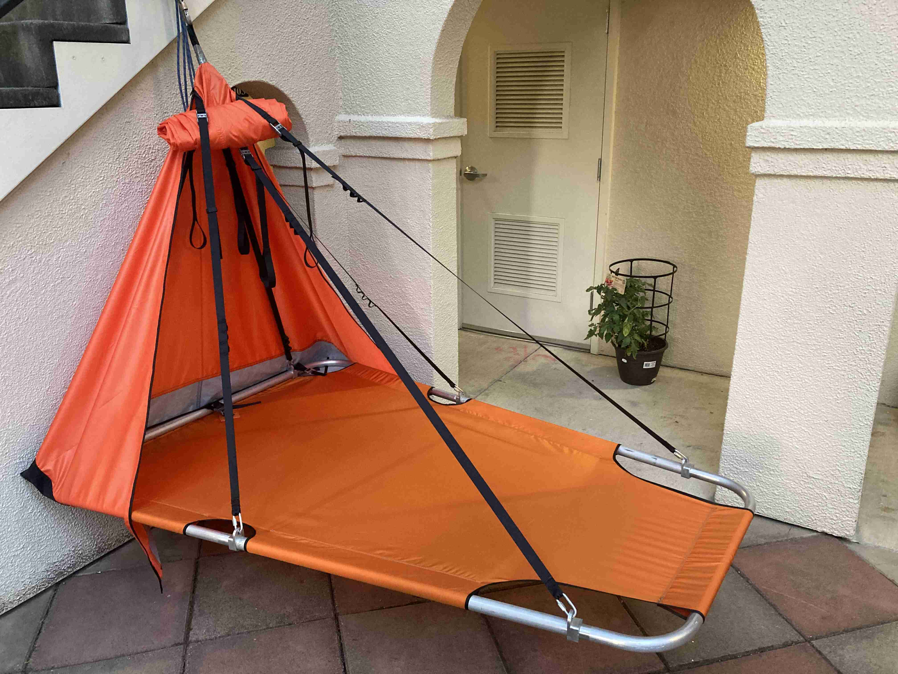
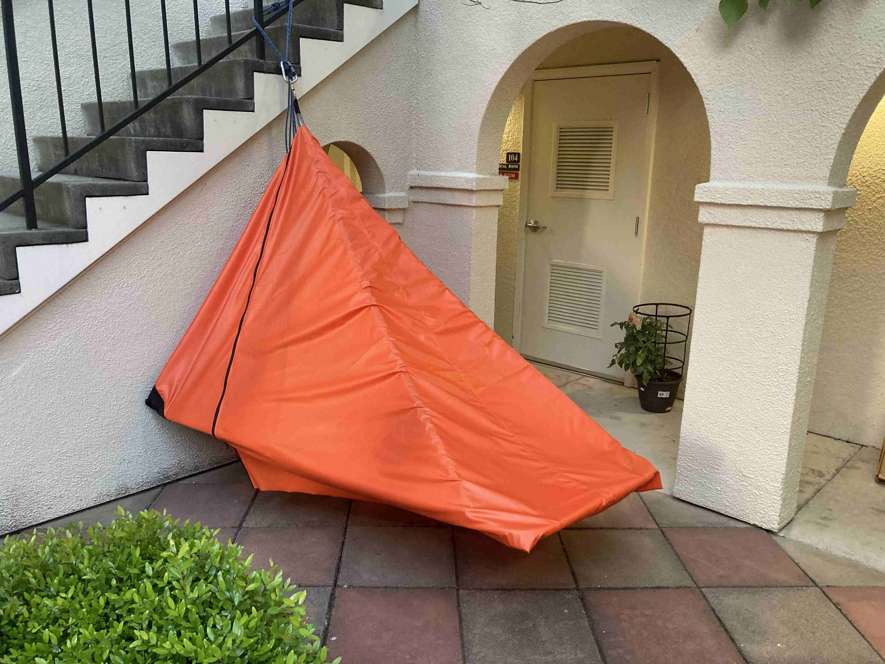
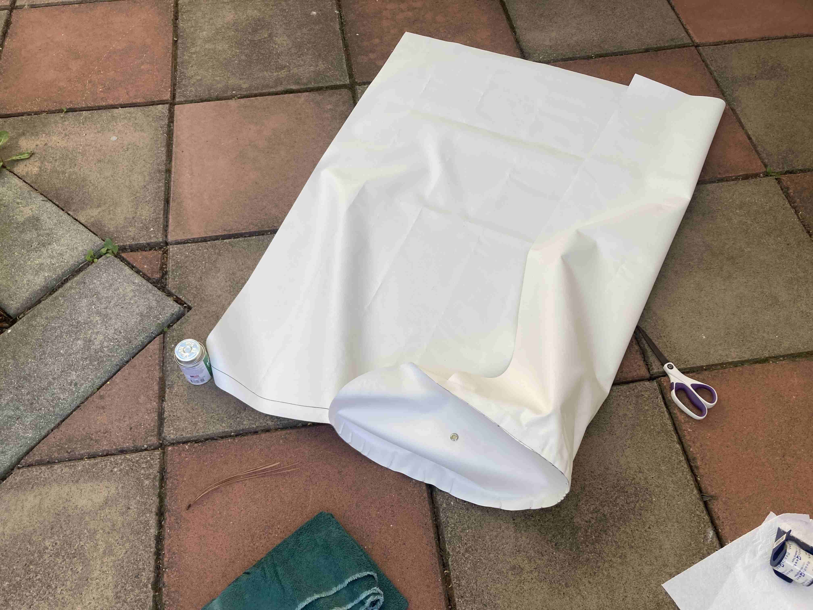
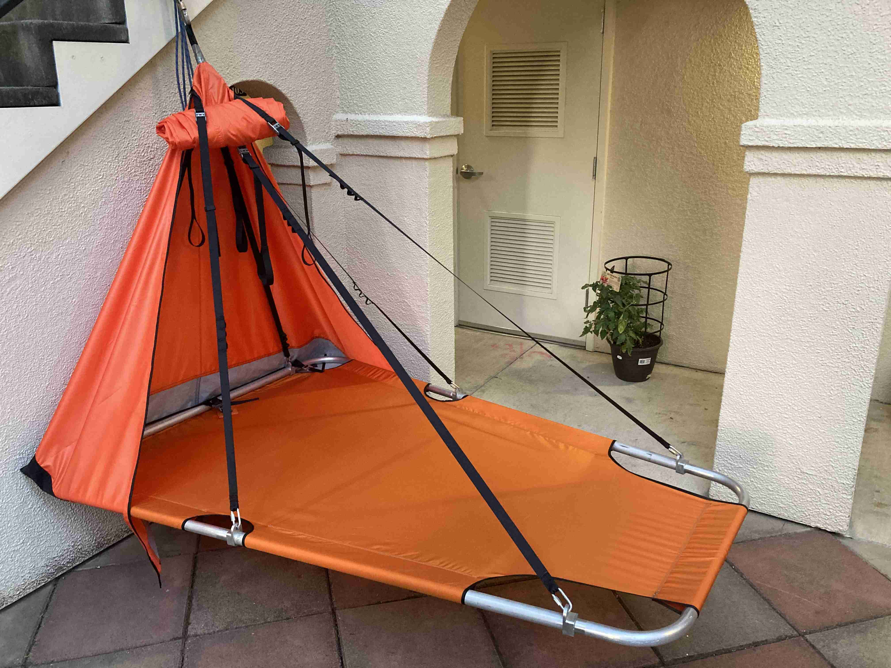
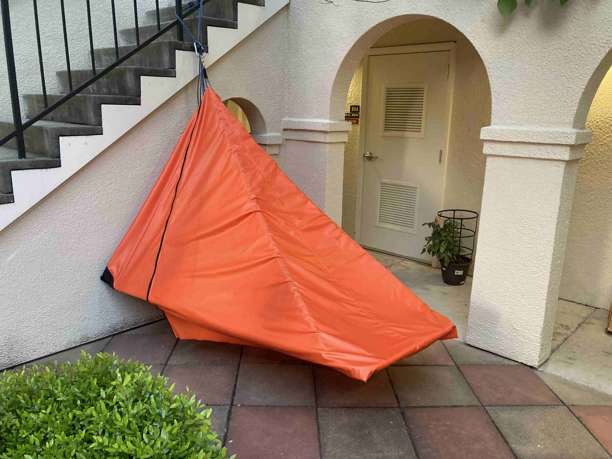
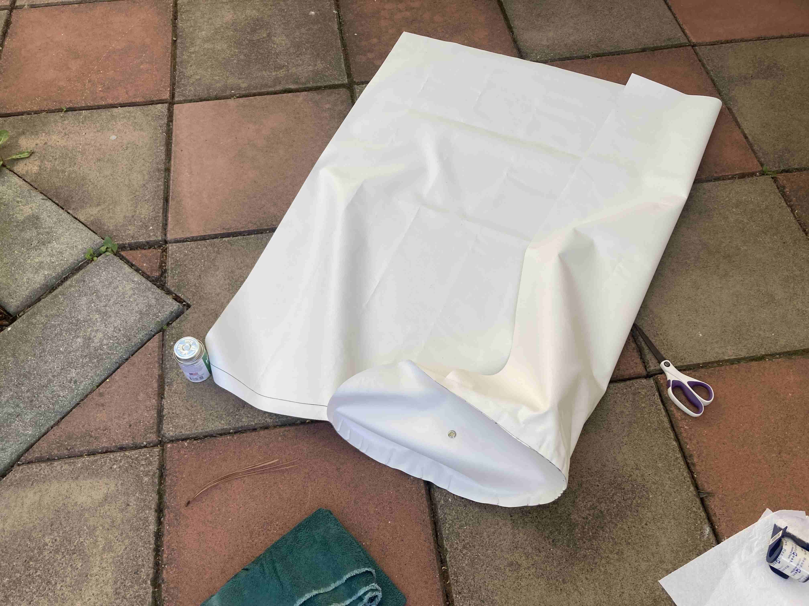


Me testing the setup and dissasembly of the ledge on a classic practice boulder in Yosemite. John's design has climbers sleeping perpendicular to the wall instead of parallel to it.
The first step in the build was to bend the aluminum tubing. This computerized tube bender made this a bit easier, although accounting for springback was still a sticking point.
With the tube bent next came the brackets that allow for easy attachment of the suspension webbing to the single-point anchor attachment.
I made 6 of these on the manual mill with a boring bar and shell mill.
Nice rounded corners are essential when working with soft-goods like the fabric for the bed, fly and haulbag.
Gluing the brackets to the frame. Because these brackets will see loading primarily in the axial direction not longitudinal (with respect to the frame tubing), J-B Weld was sufficient for attaching the brackets.
One of John's major innovations with the new portaledge design was a fully shock corded frame that essentially assembles itself, aided by these "bullet" joints between frame pieces. I decided to use delrin for these because it's cheap, light and doesn't take any loading. I didn't know that spherical turning was a possibility on a lathe, but anything is possible with the right tools...
These delrin pieces were also J-B Welded to the frame. I ran the shock-cord through the frame at this point as well.
The frame completed.
The frame is designed to fold up nice and compactly, while still making it really easy to unfold.
Next up was the fabric bed. This is designed to fold up nicely with the frame, and has cutouts around the suspension brackets to allow it to slide out of the way.
I sewed one side first to ensure a tight fit. Instead of hemming the edges I used some seam tape which was a lot easier and turned out really nice. For the structural stitches I used UV-resistant bonded thread with a high tensile strength. Some napkin math with strength per stitch, loading, safety factor etc can inform the necessary stitch pattern.
The sewing completed, notice the bed tensioning straps on the left.
The ledge with bed and suspension folded up. Super pleased with how it all packs up.
Of course as soon as the suspension was completed I had to test it out.
A fly is another essential piece to the full package. Even if the weather is good, a fly can be really nice for escaping high winds up on a wall. Here's a mock fly I made from an old bed sheet to test the design.
Marking out the pattern from my mock up. I used a piece of abrasion resistant fabric for the part of the portaledge that contacts the wall. Both fabrics are highly waterproof. I was really nervous about messing this up, which I did when I sewed the orange fabric with the coated side facing the wrong way...
Using the same industrial walking foot machine that I used for everthing else. I used full felled seams for maximum water resistance.
The fly has two waterproof zippers that allow for easy entry and exit, plus can be put folded out of the way while the weather is nice.
Fully zipped up.
The final task was a haul bag to house the whole portaledge assembly. This is vinyl-coated fabric (think dry-bag material or river raft material), which is totally waterproof. I saw a photo from Durango Sewing solutions and decided to go for a similar design here. Vinyl cement makes nice strong bonds between the fabric.
This sewing machine is a beast and handled two layers of the thick vinyl-coated fabric plus two layers of nylon webbing.
A zipper was sewn on for easy removal of the ledge.
I didn't get any photos of the haul straps, but I used the same nylon webbing from the ledge suspension to support the bag and ledge. This then attaches to the haul line.
The ledge inside the haulbag.
About this project
Getting to climb in Yosemite a lot was a real treat while I was at Stanford, and as happens to many who've seen the walls in the valley I started to have big wall aspirations. I came across an open-hardware design for portaledge systems created by John Middendorf, and the itch to get into the machine shop began to grow. For those non-climbers, a portaledge is essentially a fancy platform used to sleep on the side of cliffs on multi-day adventures. A portaledge is not a primary safety system (like a harness, anchor system or rope with no backup) as climbers should always be attached directly to the wall while using a portaledge.
I spent a couple weeks coming up with a design I was happy with (based on John's Delta2p design, although with some notable changes), sourcing materials and getting access to a machine shop. The frame is constructed from 6061 aluminum tubing (a local supplier made this easy and cheap), the bed is made from RipStop nylon, and the haul bag is made from vinyl coated nylon fabric. The final weight with the ledge, fly and haul bag is around 17 lbs or just over 7.5 kilos. That's a little lighter than popular 2-person framed ledges.